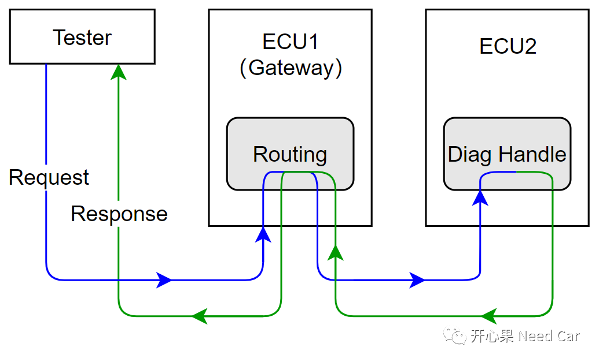
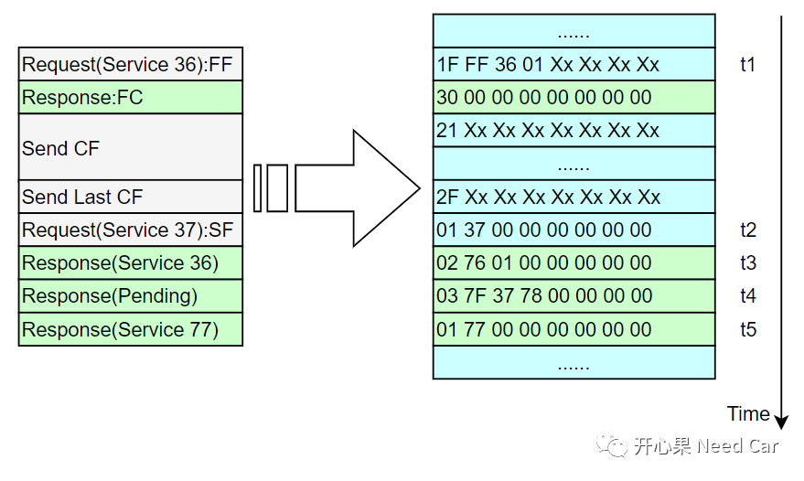
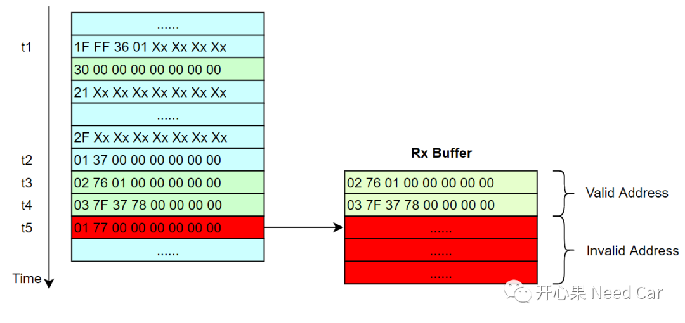
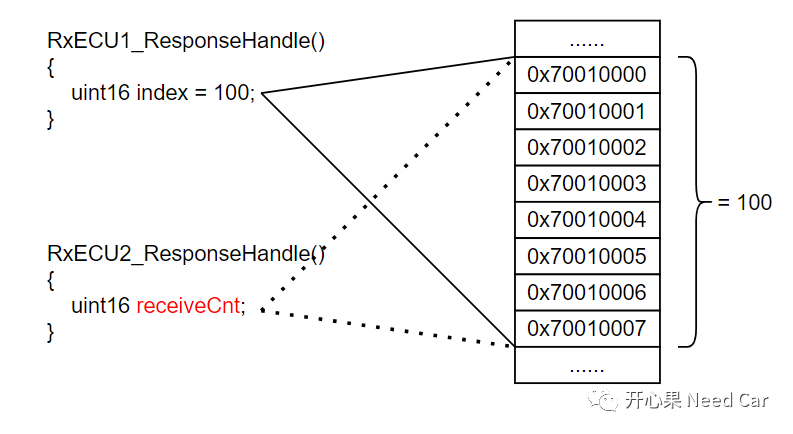

开心果 Need Car · 2022-06-12T14:45:00+08:00 · 微信原文
本文讨论一个数组越界引发的刷写失败问题，希望能给大家带来思考。
提示：基于CAN总线刷写
升级某节点(ECU2)的过程中，每当程序刷写到指定位置时，程序刷写失败（也会刷写成功，但是成功率低）。ECU2刷写时，诊断命令的请求（Request）和响应（Response）需要经过网关节点ECU1的路由，因此，可以将ECU1看作是ECU2的上位机（Tester），如下所示：

ECU1和ECU2交互过程中，出现问题时，数据流如下所示：

t1时刻，ECU1请求Service 36 01，之后ECU2给出流控帧(30 00 00)；
t2时刻，ECU1发送完最后一个连续帧的同时，顺带请求下一个诊断服务(Service 37)；
t3时刻，ECU2给出Service 36 01正响应(02 76 01);
t4时刻，ECU2给出Pending响应(0x78)；
t5时刻，ECU2给出Service 37正响应(01 77 )。
刷写失败时，问题出在t5时刻。
上述的刷写流程中使用到了队列刷写(Queue Flash)，可以参考前文Bootloader开发：队列刷写(Queued Flash)你知道多少？。
在Queue Flash中，针对同一个CanID，需要ECU可以同时缓存两帧诊断请求。为了可以缓存两帧诊断请求，问题代码中，针对每一个CanID开辟了2个Buffer缓存区。用2个Buffer缓存区，可以同时缓存两帧诊断请求的响应吗？不可以，这也是本问题的症结，如下所示：

问题代码剖析
问题代码示意（这里为便于说明问题，编写的代码只是示意作用）：
typedef struct{uint8 RecvData[8];bool BusyFlag;}Recv_Resp_Data_Type;static Recv_Resp_Data_Type Recv_Resp_Data[RECEIVE_RESPONSE_MAX_MUN]\= {0x00};void RxECU2_ResponseHandle(const uint6 CanId, const uint8* dataPtr){uint16 receiveCnt;if(CanId == 0x618){/* 查找可用的缓存区，要么是Rx Buffer 0，要么是Rx Buffer1 */(Recv_Resp_Data[0].BusyFlag == TRUE)?\(receiveCnt= 0):(receiveCnt= 1);}/* 接收缓存的数据 */for(int i = 0; i < 8; i++){Recv_Resp_Data[receiveCnt].RecvData[i] = dataPtr[i];}}

1、给局部变量赋初始值
#define RECEIVE_RESPONSE_MAX_MUN 3static Recv_Resp_Data_Type Recv_Resp_Data[RECEIVE_RESPONSE_MAX_MUN]\= {0x00};
写在最后
作为一名开发工程师，深知每一个工程bug的修复都不是说一说那样简单。分析数据、锁定问题根因、思考修复方案都在极大地考验着开发工程师，也考验着项目链条中每一位参与者：项目经理、产品经理、系统工程师、测试工程师等等。只有一个一个Bug被修复，项目顺利完成，才能Release所有参与者，才能让大家如释重负，才能让我们内心有点成就感。而Bug修复需要大家的智慧，也就是经验积累。我有幸将自己参与到的问题，整理出来，把众多人的智慧分享给更多的人，也期待更多的小伙伴加入我们Autosar_嵌入式交流群，分享你们的智慧！
往期精彩回顾